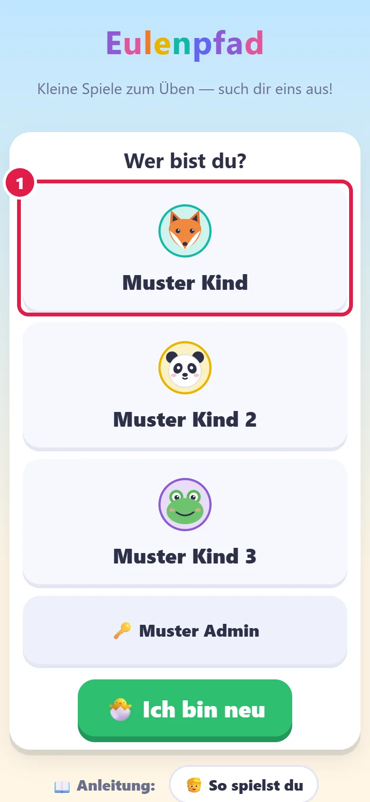
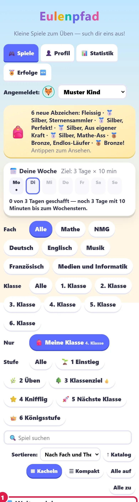
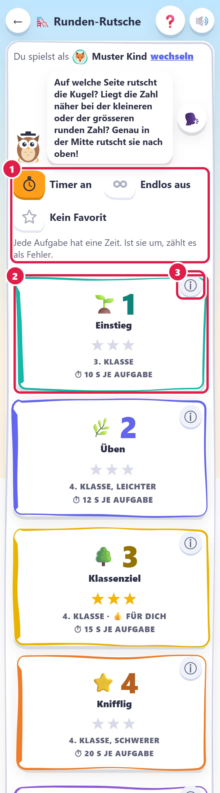
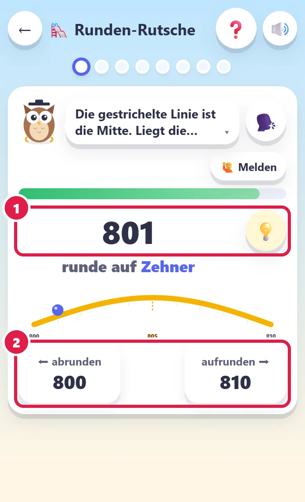
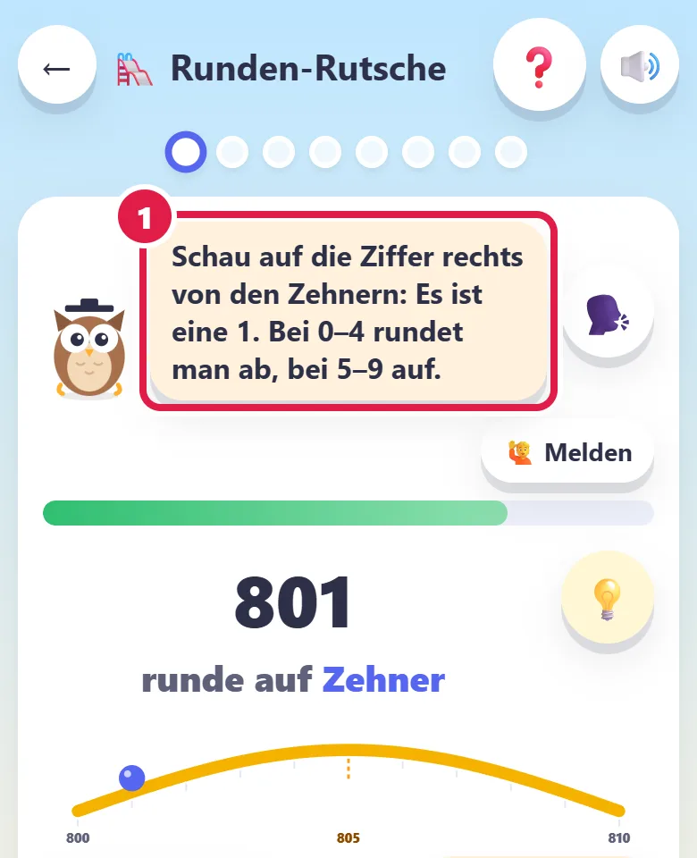
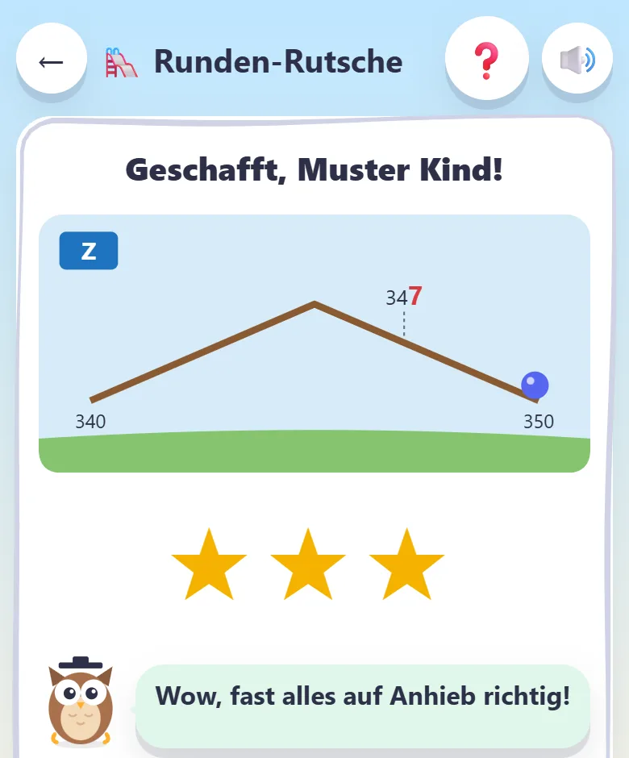
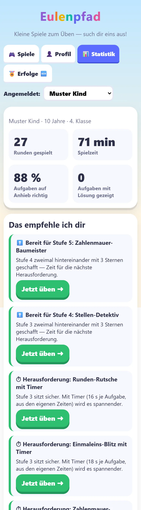
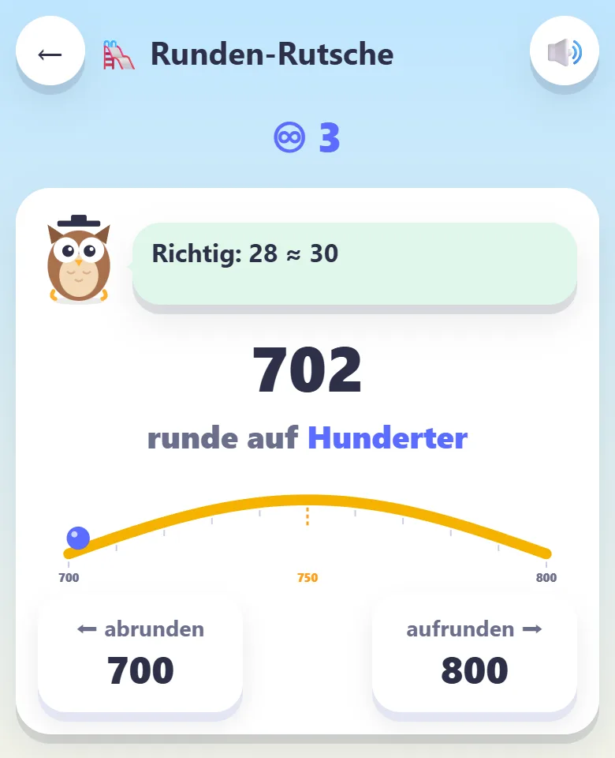
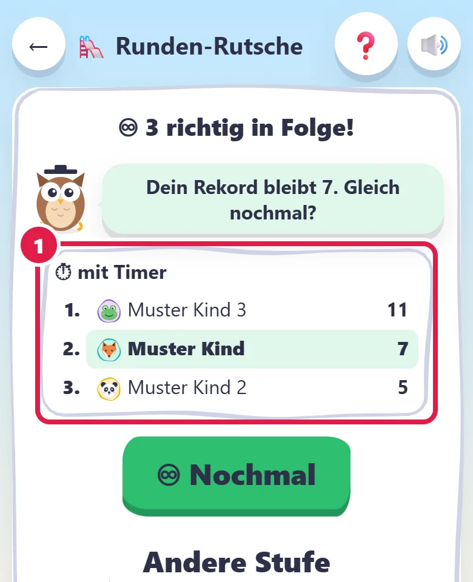

🦉 So spielst du
Die Eule zeigt dir, wie es geht.
1. Wer bist du?
Tippe auf deinen Namen.

2. Such dir ein Spiel aus
Tippe auf ein Spiel. Mit der Lupe 🔍 findest du ein Spiel schneller.

3. Wähle eine Stufe
🌱 ist leicht. 🌳 ist das Ziel deiner Klasse.
👑 ist der Endgegner!

4. Löse die Aufgabe
Lies genau. Dann tippe auf deine Antwort.

5. Die Eule hilft dir
Falsch? Das ist nicht schlimm!
Die Eule gibt dir einen Tipp. Probier es nochmals.

6. Sammle Sterne
Am Ende bekommst du Sterne.
Willst du nochmals? Oder eine andere Stufe?

7. Schau, was du kannst
Unter Statistik siehst du deine Sterne und Rekorde.

8. Endlos: Wie viele schaffst du?
Bei vielen Spielen gibt es unten ♾ Endlos.
Es geht so lange, bis eine Antwort falsch ist.
Oben siehst du, wie viele du schon hast.

Am Ende siehst du die Rangliste.
Kannst du deinen Rekord knacken?

Tipps
Lieber jeden Tag ein bisschen als einmal ganz lang.
⏱ Mit dem Timer wird es spannender. Du kannst ihn ein- und ausschalten.